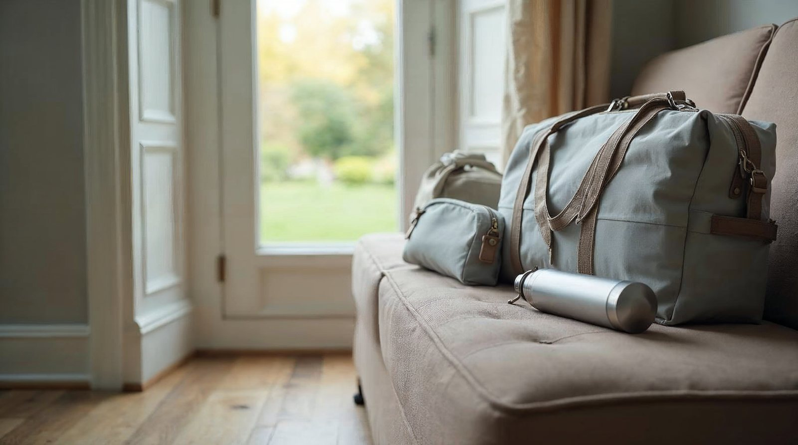
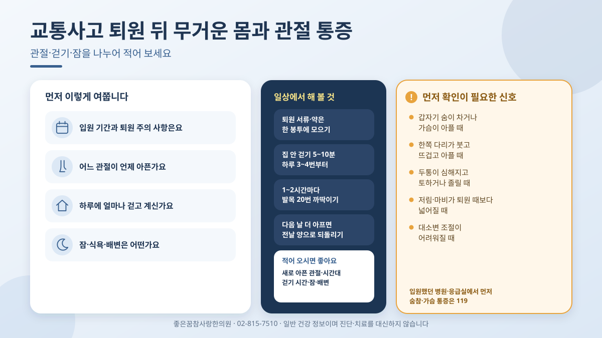

이종호 한의사 감수좋은꿈참사랑한의원 대표원장 (한의사 면허번호 19769)발행 2026-11-25 · 수정 2026-11-27
이 글의 차례
교통사고로 입원했다가 퇴원하는 날, 이제 한고비 넘겼다 싶으시죠. 그런데 막상 집에 오면 오히려 몸이 천근만근 무겁고, 무릎이나 손목, 어깨 같은 관절이 여기저기 쑤시는 분이 적지 않아요. "퇴원했는데 왜 더 아픈 것 같죠?" 진료실에서 자주 듣는 말이에요.
원래 그래요. 이런 무거움과 관절 통증은 사고 순간 몸이 받은 충격, 병실에서 누워 지낸 동안 줄어든 근력과 체력, 흐트러진 잠과 놀란 마음의 긴장이 겹쳐 나타나는 경우가 많거든요.
그러니까 사실은 두 가지를 나눠서 보셔야 해요. '몸이 무거운 것'과 '관절이 아픈 것'은 다른 얘기예요. 둘은 생기는 까닭도, 살피는 방법도 조금씩 다르거든요.
그래서 퇴원 뒤 가장 먼저 하실 일은 퇴원 요약지와 퇴원 때 들은 주의 사항, 외래 일정을 챙기는 거예요. 그리고 어느 관절이 언제 아픈지, 하루에 얼마나 걷는지, 잠은 어떤지를 1~2주 나누어 적어 두세요.
입원했던 병원의 지침 안에서 걷기와 움직임을 조금씩 늘려 가며 그 기록을 보면, 지금의 불편이 회복 과정의 무거움인지 따로 확인이 필요한 신호인지 가늠하기 쉬워져요.
왜 퇴원한 뒤에도 몸이 무겁고 관절이 아플까요
사고 순간 몸은 앞뒤나 옆으로 크게 흔들립니다. 목과 허리뿐 아니라 운전대를 꽉 잡은 손목과 어깨, 브레이크를 세게 밟은 쪽 무릎과 발목, 안전벨트가 지나간 쇄골과 가슴, 골반 주변도 함께 충격을 받을 수 있고, 앞좌석이나 문에 무릎과 팔꿈치를 부딪히기도 합니다.
입원 중에는 가장 아픈 곳이나 다친 곳에 주의가 쏠려 있습니다. 퇴원 뒤 걷고 계단을 오르는 일이 늘면서, 그동안 덜 느껴지던 다른 관절의 불편이 뒤늦게 드러나는 경우가 있습니다.
침대에 누워 지내는 시간이 길면 근력은 생각보다 빠르게 줄어드는 것으로 알려져 있습니다. 특히 몸을 세우고 걷는 데 쓰는 다리와 엉덩이 근육이 먼저 약해지기 쉽고, 나이가 많을수록 줄어드는 폭이 큰 편입니다. 퇴원 뒤 계단 몇 층에 다리가 무겁고 쉽게 지친다면 이 영향일 수 있습니다.
관절은 움직여야 주변 조직이 부드럽게 유지됩니다. 오래 덜 움직이면 관절을 감싼 막과 힘줄이 뻣뻣해져, 아침이나 오래 앉았다 일어날 때 처음 몇 걸음이 특히 뻑뻑하게 느껴지기 쉽습니다.
아픈 곳을 아끼느라 한쪽으로 기대 걷거나 목발을 짚는 것도 영향을 줍니다. 반대쪽 무릎과 고관절, 허리, 목발을 짚는 손목과 어깨로 부담이 옮겨 가 새로 아픈 곳이 생기기도 하지요.
병실에서는 밤중의 소음과 불빛, 잦은 낮잠, 통증 때문에 잠의 리듬이 흐트러지기 쉽습니다. 활동량과 식사가 달라져 변비나 소화 불편이 생기는 경우도 많고, 일부 진통제도 변비를 부를 수 있습니다. 잠이 얕으면 같은 통증도 더 예민하게 느껴지고 몸이 쉽게 무거워집니다.
마음도 몸에 남습니다. 사고 장면이 떠오르거나 보험과 일 복귀에 대한 걱정이 이어지면 몸이 늘 긴장한 상태로 지내게 되어, 어깨와 목, 턱에 힘이 들어가고 피로가 쉽게 쌓입니다.
사고 전부터 무릎이나 허리, 어깨에 불편이 있던 분은 사고와 입원을 거치며 그 불편이 더 크게 느껴지기도 합니다. 그래서 사고 전부터 있던 불편과 사고 뒤 새로 생긴 불편을 나누어 보는 것이 중요합니다.
한의학에서는 사고처럼 큰 충격과 놀람 뒤 몸이 무겁고 여기저기 쑤시는 모습을 기혈이 잘 돌지 못하고 어혈이 남은 모습으로 살피기도 합니다. 그래서 아픈 관절만이 아니라 잠, 소화, 배변, 몸이 찬 정도, 마음의 긴장도 함께 여쭙습니다.
자주 하는 오해
- 퇴원했으니 몸도 사고 전으로 돌아왔을 것이라고 여기기 쉽지만, 퇴원은 입원해서 지켜봐야 할 시기가 지났다는 뜻에 가깝습니다. 줄어든 근력과 체력은 퇴원 뒤에도 시간을 두고 조금씩 되찾아 가야 하는 경우가 많고, 그 속도는 사람마다 다릅니다.
- 몸이 무거우니 더 쉬어야 한다며 하루 종일 누워 지내는 분도 있습니다. 필요한 휴식은 취하되, 누워 있는 시간이 길어지면 근력과 체력이 더 줄어 무거움이 이어지기 쉬워 지침 안에서 조금씩 움직이는 편이 좋습니다.
- 반대로 빨리 회복하려고 퇴원하자마자 운동을 몰아서 하는 분도 있습니다. 하루에 몰아서 무리하면 다음 날 관절 통증이 커져 오히려 며칠을 쉬게 되는 경우가 많아, 조금씩 나누어 늘립니다.
- 관절이 아픈 것은 나이 탓이라며 넘기기도 합니다. 사고 뒤 새로 생겼거나 달라진 불편은 따로 적어 두어야 진료에서 함께 살필 수 있습니다.
- 입원했던 병원에 다시 연락하기를 망설이는 분도 많습니다. 퇴원 뒤 새로 생긴 증상은 입원 중의 모습을 가장 잘 아는 그 병원에 알리는 것이 판단의 출발점이 됩니다.
상황별 예시
예를 들어 신호 대기 중 뒤차에 받혀 열흘 가까이 입원했다가 퇴원한 직장인이, 목과 허리는 입원 때보다 덜한데 집에서 계단을 오르내리면 오른쪽 무릎과 발목이 시큰하고 저녁마다 두 다리가 무거운 경우입니다.
사고 순간 브레이크를 밟고 버틴 쪽 관절이 충격을 받았을 수 있고, 누워 지낸 동안 다리 근력이 줄어든 것이 겹쳤을 수 있습니다. 이럴 때는 아픈 관절과 걸은 시간, 계단 층수를 함께 적어 봅니다.
예를 들어 조수석에 타고 있다가 옆에서 부딪히는 사고로 입원했던 어르신이, 퇴원 뒤 아침마다 손가락과 어깨, 무릎이 함께 뻣뻣하고 몸이 천근만근인데 밤에는 사고 장면이 떠올라 자주 깨는 경우입니다.
이럴 때는 사고 전부터 있던 무릎 불편이 더 크게 느껴지는 것인지 새로 생긴 불편인지 나누어 적고, 아침 뻣뻣함이 몇 분 만에 풀리는지 재어 봅니다. 뻣뻣함이 한 시간 넘게 이어지고 여러 손가락 마디가 붓는다면 관절 염증 쪽 확인도 함께 권하며, 잠과 놀란 마음도 함께 살핍니다.
예를 들어 사고로 다리뼈가 부러져 수술을 받고 입원했다가 목발을 짚고 퇴원한 분이, 다친 다리보다 목발을 짚는 손목과 어깨, 체중을 대신 싣는 반대쪽 무릎이 아파지는 경우입니다.
목발 높이와 짚는 방법, 다친 다리에 체중을 얼마나 실어도 되는지는 수술한 병원에서 다시 확인하고, 겨드랑이로 체중을 싣지 않고 손으로 짚는지 점검합니다. 한의원에서는 그 지침과 부딪히지 않는 범위에서 반대쪽 관절과 몸 전체를 살핍니다.
먼저 이렇게 여쭙니다
- 사고 날짜와 경위, 앉아 있던 자리(운전석·조수석·뒷좌석), 부딪힌 방향, 안전벨트와 에어백 여부를 여쭙니다.
- 입원 기간과 입원 중 받은 진단과 검사, 퇴원할 때 들은 주의 사항과 외래 일정을 여쭙니다.
- 퇴원 뒤 처음 불편을 느낀 관절과 시기, 그 관절이 사고 전부터 아프던 곳인지 여쭙니다.
- 하루 중 언제 가장 무겁고 아픈지(아침에 일어날 때, 오래 앉았다 일어날 때, 많이 걸은 저녁) 여쭙니다.
- 하루에 얼마나 걷는지, 계단은 몇 층까지 쉬지 않고 오르는지, 일과 집안일로 얼마나 돌아갔는지 여쭙니다.
- 잠드는 데 걸리는 시간과 밤에 깨는 횟수, 사고 장면이 떠오르거나 차 소리에 놀라는 일이 있는지 여쭙니다.
- 식욕과 소화, 배변이 입원 전과 어떻게 달라졌는지 여쭙니다.
- 퇴원 약을 포함해 복용 중인 약, 다른 질환, 몸속에 수술로 넣은 금속이 있는지 여쭙니다.

퇴원할 때 챙겨 두면 좋은 것
입원했던 병원에서 받아 둘 것
- 퇴원 요약지(또는 퇴원 확인서): 진단명, 입원 기간, 입원 중 받은 검사와 치료, 퇴원 약이 정리되어 있습니다.
- 영상 판독지: X선, CT, MRI 같은 검사를 받았다면 판독지를 받아 두고, 영상 자체는 병원에서 안내하는 방식으로 복사해 둡니다.
- 진단서나 소견서를 받았다면 그 사본
- 의무기록 사본은 대개 본인이 신분증을 가지고 병원의 의무기록 창구에서 신청합니다. 가족이 대신 받을 때 필요한 서류, 발급 비용, 걸리는 시간은 병원마다 다르니 해당 병원에 미리 전화로 확인해 주세요.
퇴원할 때 물어 두면 좋은 것
- 다음 외래 날짜와 그때까지 지켜볼 증상
- 걷기, 계단, 무게 들기, 운전, 샤워와 목욕을 언제부터 어느 정도 해도 되는지
- 보조기나 목발을 언제까지, 어떻게 써야 하는지
- 퇴원 약을 언제까지 먹는지, 다 먹은 뒤 통증이 다시 생기면 어떻게 할지
- 어떤 증상이 생기면 외래를 기다리지 말고 바로 병원으로 와야 하는지
보험 관련 메모
- 보험사 담당자 이름과 연락처, 안내받은 내용(접수 번호 등)을 한곳에 적어 둡니다.
- 건강보험(또는 자동차보험) 적용 여부는 방문 전 전화로 확인해 주세요.
몸이 무거운 것과 관절이 아픈 것, 나누어 살펴보기
같은 '몸이 무겁고 쑤신다'도 어떤 모습인지에 따라 지켜볼 것과 먼저 확인할 것이 달라집니다. 아래 구분은 진단이 아니라 기록과 진료의 단서입니다.
양쪽이 고르게 무겁고 쉽게 지칠 때
- 두 다리가 함께 무겁고 계단이나 오래 걷기 뒤 지치며, 쉬면 회복되는 모습은 누워 지낸 동안 줄어든 근력과 체력 쪽 단서로 봅니다.
처음 움직일 때 뻣뻣하고 몇 분 뒤 풀릴 때
- 아침에 일어나거나 오래 앉았다 일어날 때 관절이 뻑뻑하고, 몇 분 움직이면 덜해지는 모습은 오래 덜 움직인 관절이 굳은 쪽 단서입니다.
한 관절이 붓거나 디딜 때 날카롭게 아플 때
- 특정 관절 한 곳이 붓거나 열감이 있고, 체중을 실을 때 날카롭게 아프거나, 무릎이 꺾이듯 힘이 빠지고 걸리는 느낌이 있다면 그 관절과 인대를 따로 확인해야 할 수 있습니다.
저림이 퍼지거나 힘이 빠질 때
- 팔다리 저림이나 감각이 둔한 범위가 넓어지거나 힘이 빠진다면 관절보다 신경 쪽 단서로, 아래 '먼저 확인' 구역에 해당하는 신호입니다.
잠과 소화, 마음이 함께 흔들릴 때
- 잠이 얕고 식욕이 줄며 작은 소리에도 놀라는 날이 이어지면, 몸의 무거움이 마음의 긴장과 함께 얽혀 있는 경우가 많습니다. 몸의 기록과 함께 잠과 마음도 적어 둡니다.
스스로 점검해 보세요
- 입원 전보다 걸을 수 있는 시간이 눈에 띄게 줄었고 계단에서 다리가 무겁다.
- 아침에 일어나거나 오래 앉았다 일어날 때 관절이 뻣뻣하고, 몇 분 움직이면 덜하다.
- 퇴원 뒤 새로 아프기 시작한 관절이 있다.
- 아픈 곳을 아끼느라 한쪽으로 기대 걷거나 절뚝인다.
- 잠드는 데 30분 넘게 걸리거나 밤에 두 번 이상 깨는 날이 많다.
- 사고 장면이 떠오르거나 차 소리에 깜짝 놀라는 일이 잦다.
- 입원 뒤 식욕이 줄거나 변비가 생겼다.
해당하는 항목이 많을수록 관절만이 아니라 걷기와 잠, 마음까지 함께 살펴볼 거리가 많다는 뜻입니다. 체크한 항목을 그대로 가져오시면 상담에서 어디부터 볼지 정하기 쉽습니다.
일상에서 먼저 해 볼 수 있는 것
입원했던 병원에서 받은 운동과 생활 지침이 있다면 그것이 먼저입니다. 아래는 그 지침과 부딪히지 않는 범위에서, 퇴원 뒤 몇 주 동안 해 볼 수 있는 것들입니다.
퇴원 첫날~3일째(집에 적응하는 시기)
- 퇴원 요약지와 영상 판독지, 퇴원 약을 한 봉투에 모으고, 다음 외래 날짜를 달력에 적어 둡니다.
- 침대와 화장실 사이 길의 문턱과 전선, 미끄러운 깔개를 정리하고, 밤에는 작은 불을 켜 둡니다. 다리 힘이 줄어든 시기에는 넘어지지 않는 것이 먼저입니다.
- 자주 쓰는 물건은 허리에서 가슴 사이 높이로 옮겨, 깊이 숙이거나 높이 팔을 뻗는 일을 줄입니다.
- 걷기는 집 안이나 집 앞에서 5~10분씩 하루 3~4번, 입원 중 걷던 양보다 조금만 늘립니다.
- 누워 있거나 앉아 있을 때도 1~2시간마다 발목을 위아래로 20번 까딱여 종아리 근육을 움직입니다.
- 일어나는 시각부터 일정하게 정하고, 아침 햇빛을 10~20분 쬐며, 낮잠은 30분 안쪽으로 줄여 병실에서 흐트러진 잠의 리듬을 되찾아 갑니다.
4일째~2주(조금씩 늘리는 시기)
- 걷는 시간은 이틀에 5분 정도씩 늘려 하루 20~30분을 목표로 합니다. 걸은 뒤 생긴 통증이 한두 시간 안에 가라앉으면 견딜 만한 양, 다음 날 아침까지 관절 통증이 더 심하면 전날 양으로 되돌리라는 신호로 봅니다.
- 상도동처럼 언덕과 계단이 많은 동네에서는 평지보다 다리에 부담이 커서, 처음에는 평지 위주로 걷고 오르막은 짧게 나누어 갑니다.
- 팔걸이가 있는 의자에서 팔걸이를 짚고 일어났다 앉기를 10번씩 하루 두 번 합니다. 다리와 엉덩이 근육을 일상 동작으로 깨우는 방법이며, 다친 다리에 체중을 싣지 말라는 안내를 받았다면 하지 않습니다.
- 아침에는 따뜻한 샤워 뒤 손가락 쥐었다 펴기, 손목과 발목 돌리기, 누워서 무릎 굽혔다 펴기를 각각 10번씩 아프지 않은 범위에서 합니다.
- 30~40분 앉아 있으면 일어나 2~3분 걷습니다.
- 끼니마다 두부, 달걀, 생선, 살코기 같은 단백질 반찬을 한 가지씩 곁들이고, 물을 자주 마시며, 채소와 과일을 챙겨 배변 리듬을 되찾아 갑니다.
- 뻣뻣한 관절은 15분 정도 따뜻하게 데운 뒤 움직이고, 붓고 열감이 있는 관절은 데우지 말고 진료에서 먼저 살펴봅니다.
2주 이후(일상으로 돌아가는 시기)
- 출근이나 집안일은 반나절 분량부터 시작하고, 장보기처럼 무거운 일은 나누어 합니다.
- 운전은 입원했던 병원에서 들은 시점을 따르고, 고개를 돌려 확인하기 어렵거나 브레이크를 밟는 다리가 아프면 미룹니다. 운전대를 잡기가 무섭게 느껴진다면 낮 시간 익숙한 길에서 짧게 시작해 봅니다.
- 일주일에 한 번 같은 길을 걸어 걸린 시간과 쉬어 간 횟수를 적어 비교합니다.
하지 않는 것
- 아픈 관절을 세게 꺾거나 비틀어 소리를 내는 것
- 퇴원 직후 뜨거운 탕이나 사우나에 오래 머무는 것(오래 누워 지낸 뒤에는 어지럼이 생기기 쉽습니다)
한의원에서 함께 살필 수 있는 경우
- 입원했던 병원 외래에서 확인을 받은 뒤에도 몸이 무겁고 여러 관절이 뻐근한 날이 이어지는 경우
- 아픈 곳을 아끼다 반대쪽 관절이나 허리, 목발을 짚는 손목과 어깨까지 뻐근해진 경우
- 퇴원 뒤 잠이 얕아지고 소화와 배변이 흐트러져 몸 전체의 리듬을 함께 살피고 싶은 경우
- 걷기와 출근, 운전처럼 일상으로 돌아가는 순서를 함께 정하고 싶은 경우
좋은꿈참사랑한의원에서는 첫 방문 때도 모든 분께 그렇듯 맥부터 짚으며 이야기를 여쭙습니다. 사고가 어떻게 났는지, 입원 중 어떤 진단과 검사를 받았는지, 퇴원할 때 무엇을 조심하라고 들었는지, 퇴원 뒤 어느 관절이 언제부터 불편해졌는지를 차례로 여쭙니다.
가져오신 퇴원 요약지와 영상 판독지도 함께 봅니다. 외래 진료가 남아 있다면 그대로 이어 가시도록 일정이 겹치지 않게 정합니다.
맥과 함께 혀와 배도 살펴 잠과 피로, 소화, 배변, 몸이 찬 정도처럼 몸 전체의 리듬을 확인합니다. 그다음 목과 허리, 아픈 관절을 하나씩 움직여 양쪽을 비교하고, 붓기와 열감, 눌러서 예민한 자리, 걷는 모습과 의자에서 일어나는 모습을 봅니다.
팔다리의 감각과 힘이 양쪽 고른지도 확인합니다. 필요하다고 판단되면 초음파로 관절 주변 힘줄과 인대, 근육 같은 부드러운 조직을 양쪽 비교해 살펴보고, 뼈나 머리, 가슴과 배 안쪽 확인이 필요하다고 판단되면 입원했던 병원이나 검사가 가능한 의료기관을 먼저 안내합니다.
그 뒤 상태와 몸에 맞춰 침, 약침, 온열 치료, 추나 등을 신중하게 정하고, 골절이나 수술한 부위가 있다면 그 자리에 직접 힘을 싣는 동작은 피합니다. 몸속에 수술로 넣은 금속이 있다면 온열 장비를 쓸지, 어느 부위에 쓸지도 먼저 따져 봅니다.
한약은 퇴원 약과 복용 중인 약을 확인한 뒤 필요하다고 판단될 때 상의합니다. 진료를 마치면 집에서 이어 갈 걷기와 움직임의 양을 함께 정하고, 다시 오시면 지난번 적어 온 관절 기록과 걷기 시간, 잠부터 이어서 여쭙습니다. 건강보험(또는 자동차보험) 적용 여부는 방문 전 전화로 확인해 주세요.
얼마나 지켜보고 언제 상담할까요
- 퇴원 뒤 첫 2주는 걷기 시간과 아픈 관절의 점수(0~10), 아침 뻣뻣함이 풀리는 시간을 매일 적어 일주일 단위로 비교합니다. 근력과 체력 쪽 무거움인지 가늠할 때는 걸을 수 있는 시간이 조금씩 늘어나는지를 봅니다.
- 2주가 지나도 걷는 시간이 늘지 않거나 아픈 관절의 수가 늘어난다면, 입원했던 병원 외래 때 알리고 상담을 받아 함께 살펴보시길 권합니다.
- 한 관절이 붓고 열감이 있거나 디딜 때마다 날카롭게 아프다면 지켜보는 기간을 길게 두지 말고 확인합니다.
- 잠이 흐트러지거나 사고 장면이 떠오르는 일이 2주 넘게 이어지면 몸의 진료와 함께 마음 건강 상담도 받아 보시길 권합니다.
이렇게 기록해 오시면 상담이 쉬워집니다
- 퇴원 요약지, 영상 판독지, 진단서나 소견서 사본, 퇴원 약 목록
- 사고 날짜와 경위, 입원 기간, 다음 외래 일정
- 사람 몸 앞뒤 그림에 사고 전부터 아프던 곳과 퇴원 뒤 새로 아픈 곳을 다른 색으로 표시한 것
- 하루 걷기 시간과 쉬지 않고 오른 계단 층수, 아픈 관절 점수(0~10), 아침 뻣뻣함이 풀리는 시간
- 잠든 시각과 깬 횟수, 식욕과 배변의 변화
- 보험사 담당자 연락처와 안내받은 내용
- 복용 중인 약과 다른 질환, 몸속 금속이나 전자 의료기기 여부
챙길 게 많아 보여도 처음부터 다 갖추지 않으셔도 돼요. 퇴원 요약지 한 장과 일주일치 메모만 있어도 얘기가 훨씬 구체적이 되거든요.
치료는 제가 맡을게요. 대신 하나만 부탁드려요. 하루에 걸은 시간을 한 줄씩만 적어 주세요. 딴 건 하시던 대로 편하게 하셔도 돼요.
퇴원했다고 몸이 바로 사고 전으로 돌아오지는 않아요. 원래 그래요. 줄어든 근력은 하루에 몰아서 되찾는 게 아니라, 입원했던 병원의 지침 안에서 약하게, 오래, 매일 쌓아 가는 거예요. 어제보다 조금 더 걸은 날이 있으면 그걸로 충분해요.
사고 뒤의 일들은 몸도 마음도 번거롭게 하죠. 혼자 다 짊어지지 마시고, 기록을 들고 한 번 같이 보세요. 궁금한 건 그냥 편하게 물어보세요.
이런 증상은 먼저 확인이 필요합니다
- 갑자기 숨이 차거나 가슴이 아픈 경우, 한쪽 종아리가 붓고 뜨거운 경우
- 두통이 점점 심해지거나 자꾸 졸리는 경우, 한쪽 팔다리 힘이 빠지거나 저림이 퍼지는 경우
이런 신호가 있으면 한의원보다 가까운 병원이나 응급실을 먼저 찾으세요.
관련 글
- 교통사고 치료 중에는 무엇을 기록해 두면 좋을까요?
- 교통사고 뒤 자동차보험으로 한의원 치료를 받으려면 어떻게 진행되나요?
- 교통사고 뒤 운전이 무섭고 장면이 떠오를 때는 어떻게 지내면 되나요?

여쭙는 것
- 사고 날짜와 경위, 앉아 있던 자리(운전석·조수석·뒷좌석), 부딪힌 방향, 안전벨트…
- 입원 기간과 입원 중 받은 진단과 검사, 퇴원할 때 들은 주의 사항과 외래 일정을…
- 퇴원 뒤 처음 불편을 느낀 관절과 시기, 그 관절이 사고 전부터 아프던 곳인지 여쭙…
생활에서 해 볼 것
- 퇴원 요약지와 영상 판독지, 퇴원 약을 한 봉투에 모으고, 다음 외래 날짜를 달력에…
- 침대와 화장실 사이 길의 문턱과 전선, 미끄러운 깔개를 정리하고, 밤에는 작은 불을…
- 자주 쓰는 물건은 허리에서 가슴 사이 높이로 옮겨, 깊이 숙이거나 높이 팔을 뻗는…
한의원에서 함께 살필 것
- 입원했던 병원 외래에서 확인을 받은 뒤에도 몸이 무겁고 여러 관절이 뻐근한 날이 이…
- 아픈 곳을 아끼다 반대쪽 관절이나 허리, 목발을 짚는 손목과 어깨까지 뻐근해진 경우
- 퇴원 뒤 잠이 얕아지고 소화와 배변이 흐트러져 몸 전체의 리듬을 함께 살피고 싶은 경우
먼저 확인이 필요한 신호
- 갑자기 숨이 차거나 가슴이 아픈 경우, 한쪽 종아리가 붓고 뜨거운 경우
- 두통이 점점 심해지거나 자꾸 졸리는 경우, 한쪽 팔다리 힘이 빠지거나 저림이 퍼지는…
한눈에 보는 표
| 구분 | 핵심 |
|---|---|
| 여쭙는 것 | 사고 날짜와 경위, 앉아 있던 자리(운전석·조수석·뒷좌석), 부딪힌 방향, 안전벨트와 에어백 여부를 여쭙니다. 입원 기간과 입원 중 받은 진단과 검사, 퇴원할 때 들은 주의 사항과 외래 일정을 여쭙니다. |
| 생활에서 해 볼 것 | 퇴원 요약지와 영상 판독지, 퇴원 약을 한 봉투에 모으고, 다음 외래 날짜를 달력에 적어 둡니다. 침대와 화장실 사이 길의 문턱과 전선, 미끄러운 깔개를 정리하고, 밤에는 작은 불을 켜 둡니다. 다리 힘이 줄어든 시기에는 넘어지지 않는 것이 먼저입니다. |
| 한의원에서 함께 살필 것 | 입원했던 병원 외래에서 확인을 받은 뒤에도 몸이 무겁고 여러 관절이 뻐근한 날이 이어지는 경우 아픈 곳을 아끼다 반대쪽 관절이나 허리, 목발을 짚는 손목과 어깨까지 뻐근해진 경우 |
| 먼저 확인이 필요한 신호 | 갑자기 숨이 차거나 가슴이 아픈 경우, 한쪽 종아리가 붓고 뜨거운 경우 두통이 점점 심해지거나 자꾸 졸리는 경우, 한쪽 팔다리 힘이 빠지거나 저림이 퍼지는 경우 |
자주 묻는 질문
입원했던 병원 외래가 남아 있는데 한의원 진료를 함께 받아도 되나요?
입원했던 병원의 외래 진료는 그대로 이어 가시길 권합니다. 받은 진단과 지침, 외래 일정을 알려 주시면 겹치지 않게 정하고, 한의원 진료를 받는다는 사실도 외래 때 함께 알려 주세요.
퇴원했는데 왜 몸이 더 무겁게 느껴지나요?
사고 때의 충격, 누워 지낸 동안 줄어든 근력과 체력, 흐트러진 잠과 긴장이 겹치고, 퇴원 뒤 움직임이 늘면서 그 무거움이 더 드러나는 경우가 많습니다.
퇴원 뒤 걷기와 운동은 얼마나 하면 되나요?
입원했던 병원의 지침이 먼저입니다. 그 범위 안에서 집 안 걷기 5~10분씩 하루 3~4번으로 시작해 이틀에 5분 정도씩 늘리고, 다음 날 아침 관절 통증이 더 심하면 전날 양으로 되돌립니다.
자동차보험으로 한의원 진료를 이어 갈 수 있나요?
사고 상황과 보험 처리 진행에 따라 달라 이 글에서 정해 말씀드리기 어렵습니다. 건강보험(또는 자동차보험) 적용 여부는 방문 전 전화로 확인해 주세요.
사고 전부터 아프던 관절도 함께 봐 주나요?
네, 함께 여쭙고 살핍니다. 사고 전부터 있던 불편과 사고 뒤 새로 생기거나 달라진 불편을 나누어 적어 오시면 어디부터 볼지 정하기 쉽습니다.
좋은꿈참사랑한의원은 재진 때 지난번 이야기부터 이어서 여쭙니다. 진료시간과 예약은 오시는 길에서 확인하세요.
어디서 상담받을 수 있나요?
좋은꿈참사랑한의원은 서울 동작구 만양로2길 2 신성빌딩 3층·5층(서울 동작구 상도동, 7호선 상도역 3번 출구 근처)에 있습니다. 한의사 3명(이종호 대표원장, 조영기 수석진료원장, 정원영 진료원장)이 진료합니다. 진료시간은 평일 09:30~20:00(점심 13:00~14:00), 토·일·공휴일 09:30~15:00이며, 방문 전 전화로 확인을 권합니다. 예약은 네이버 예약, 카카오톡 상담, 전화 02-815-7510로 받습니다.
이 글은 일반적인 건강 정보이며 개인의 진단이나 치료를 대신하지 않습니다. 증상이 있거나 복용 중인 약이 있다면 진료를 통해 확인하세요. 치료 효과는 개인마다 다를 수 있습니다.
작성 기준: 일반적으로 알려져 있는 건강 정보를 참고해 정리했습니다(대표원장 감수). 증상 기록은 1~2주 동안 하루 1회, 비슷한 시간에 적어 오시면 지난 상태와 비교하기 쉽습니다.